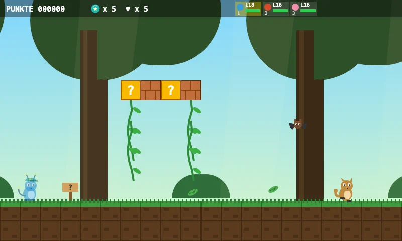
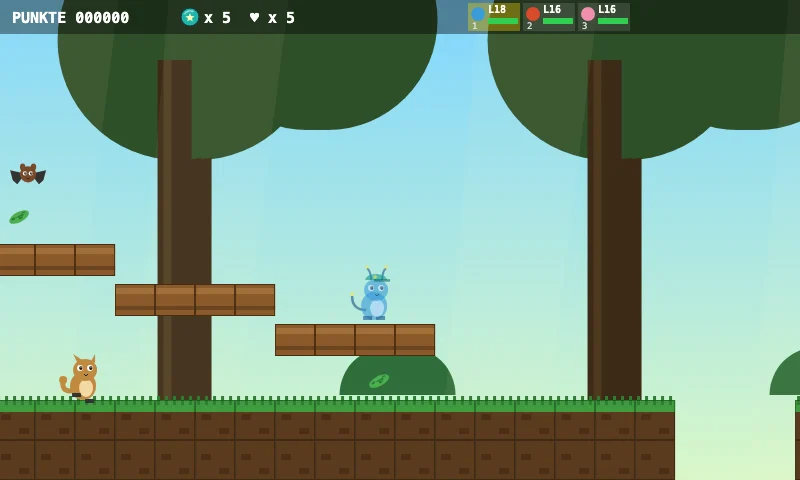
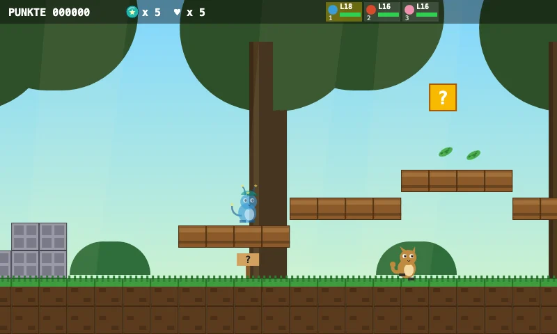
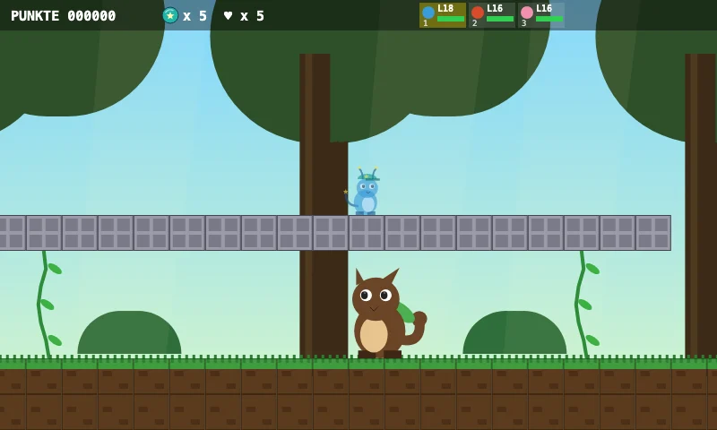
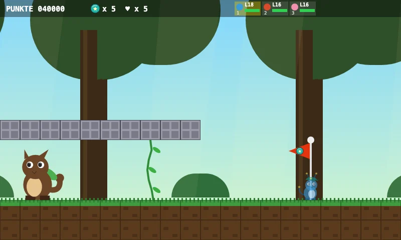

Aventure Zappilon
Jungle des singes
Les singes font une fête de la banane !
Fais un tour sur les montagnes russes de lianes.
Attention aux piquants !
Lianekong t'attend dans la maison des palmiers.
Cinq aperçus du niveau

Le monde
Les singes font une fête de la banane !

Objectif
Fais un tour sur les montagnes russes de lianes.

Particularité
Les montagnes russes de lianes ! Saute sur les rails en bois.

Boss
Lianekong, roi des palmiers — Ramasse d'abord le cœur – ton équipe sera prête !

Dernière ligne droite
Lianekong t'attend dans la maison des palmiers.
Découvre des secrets, relève des défis et trouve le chemin vers le but.